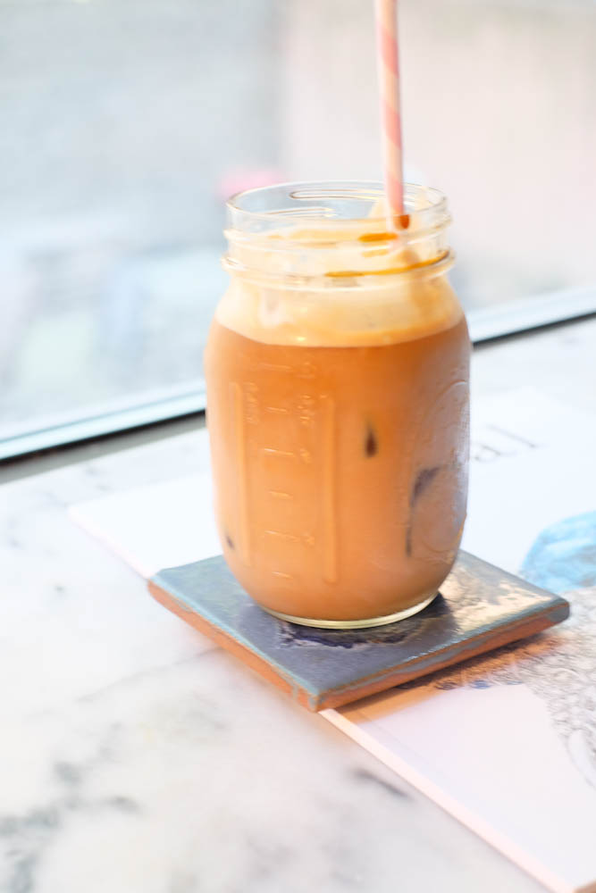

Dirty Chai

Description
A dirty chai is a mix of chai tea, milk and coffee (the ingredient that makes it "dirty").
Ingredients:
- 6oz chai concentrate (such as Oregon Chai)
- 6oz of milk (alternative milks work fine as well)
- Instant coffee (read package for quantity)
Directions:
- Heat milk in a small pot over low heat
- Mix in instant coffee
- Add milk coffee mix to mug with chai concentrate
- (Optional) Instead of heating the milk the mixture can be served over ice!
Homepage